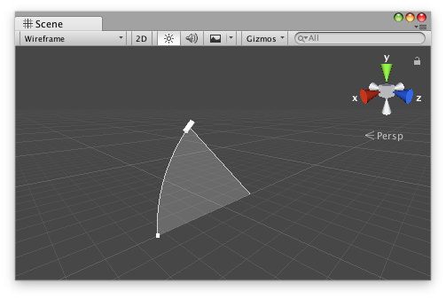

Description 描述
A class for a compound handle to edit an angle and a radius in the Scene view.

ArcHandle in the Scene View.
This class allows you to display control handles for editing the angle and radius of an arc. The arc originates at Vector3.forward multiplied by the radius and rotates around Vector3.up. The handle rendered by this class's DrawHandle method is affected by global state in the Handles class, such as Handles.matrix and Handles.color.
The following component defines an object with an angle and force property.
using UnityEngine;
public class ProjectileExample : MonoBehaviour { public float elevationAngle { get { return m_ElevationAngle; } set { m_ElevationAngle = value; } } [SerializeField] float m_ElevationAngle = 45f;
public float impulse { get { return m_Impulse; } set { m_Impulse = value; } } [SerializeField] float m_Impulse = 20f;
public Vector3 facingDirection { get { Vector3 result = transform.forward; result.y = 0f; return result.sqrMagnitude == 0f ? Vector3.forward : result.normalized; } }
protected virtual void Start() { GameObject ball = GameObject.CreatePrimitive(PrimitiveType.Sphere);
Vector3 direction = facingDirection; direction = Quaternion.AngleAxis(elevationAngle, Vector3.Cross(direction, Vector3.up)) * direction; ball.AddComponent<Rigidbody>().AddForce(direction * impulse, ForceMode.Impulse); } }
The following Custom Editor example allows you to edit the elevation angle and force properties for this component in the Scene view, where the force is represented by the radius of the handle.
using UnityEditor; using UnityEditor.IMGUI.Controls; using UnityEngine;
[CustomEditor(typeof(ProjectileExample))] public class ProjectileExampleEditor : Editor { ArcHandle m_ArcHandle = new ArcHandle();
protected virtual void OnEnable() { // arc handle has no radius handle by default m_ArcHandle.SetColorWithRadiusHandle(Color.white, 0.1f); }
// the OnSceneGUI callback uses the Scene view camera for drawing handles by default protected virtual void OnSceneGUI() { ProjectileExample projectileExample = (ProjectileExample)target;
// copy the target object's data to the handle m_ArcHandle.angle = projectileExample.elevationAngle; m_ArcHandle.radius = projectileExample.impulse;
// set the handle matrix so that angle extends upward from target's facing direction along ground Vector3 handleDirection = projectileExample.facingDirection; Vector3 handleNormal = Vector3.Cross(handleDirection, Vector3.up); Matrix4x4 handleMatrix = Matrix4x4.TRS( projectileExample.transform.position, Quaternion.LookRotation(handleDirection, handleNormal), Vector3.one );
using (new Handles.DrawingScope(handleMatrix)) { // draw the handle EditorGUI.BeginChangeCheck(); m_ArcHandle.DrawHandle(); if (EditorGUI.EndChangeCheck()) { // record the target object before setting new values so changes can be undone/redone Undo.RecordObject(projectileExample, "Change Projectile Properties");
// copy the handle's updated data back to the target object projectileExample.elevationAngle = m_ArcHandle.angle; projectileExample.impulse = m_ArcHandle.radius; } } } }
See Also: Editor.OnSceneGUI, Handles.SetCamera.
Properties 属性
| angle | Returns or specifies the angle of the arc for the handle. | ||
| angleHandleColor | Returns or specifies the color of the angle control handle. | ||
| angleHandleDrawFunction | The CapFunction to use when displaying the angle control handle. | ||
| angleHandleSizeFunction | The SizeFunction to specify how large the angle control handle should be. | ||
| fillColor | Returns or specifies the color of the arc shape. | ||
| radius | Returns or specifies the radius of the arc for the handle. | ||
| radiusHandleColor | Returns or specifies the color of the radius control handle. | ||
| radiusHandleDrawFunction | The CapFunction to use when displaying the radius control handle. | ||
| radiusHandleSizeFunction | The SizeFunction to specify how large the angle control handle should be. | ||
| wireframeColor | Returns or specifies the color of the curved line along the outside of the arc. |
Constructors
| ArcHandle | Creates a new instance of the ArcHandle class. |
Public Methods 公共方法
| DrawHandle | A function to display this instance in the current handle camera using its current configuration. | ||
| SetColorWithoutRadiusHandle | Sets angleHandleColor, wireframeColor, and fillColor to the same value, where fillColor will have the specified alpha value. radiusHandleColor will be set to Color.clear and the radius handle will be disabled. | ||
| SetColorWithRadiusHandle | Sets angleHandleColor, radiusHandleColor, wireframeColor, and fillColor to the same value, where fillColor will have the specified alpha value. |
Static Methods 静态方法
| DefaultAngleHandleDrawFunction | A CapFunction that draws a line terminated with Handles.CylinderHandleCap. | ||
| DefaultAngleHandleSizeFunction | A SizeFunction that returns a fixed screen-space size. | ||
| DefaultRadiusHandleSizeFunction | A SizeFunction that returns a fixed screen-space size. |